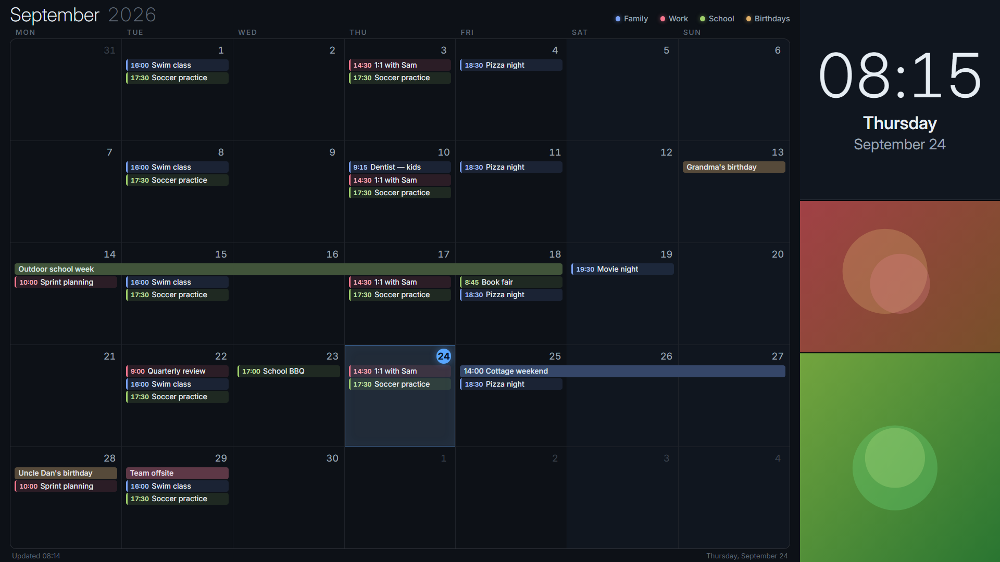
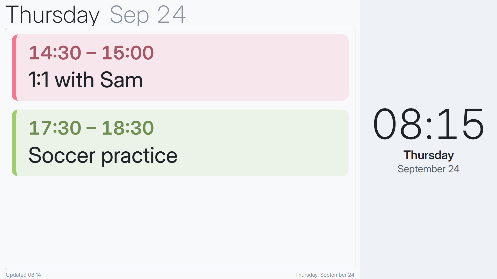
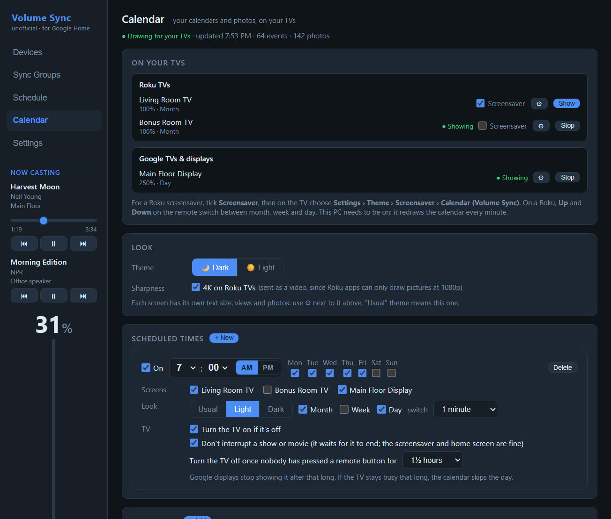
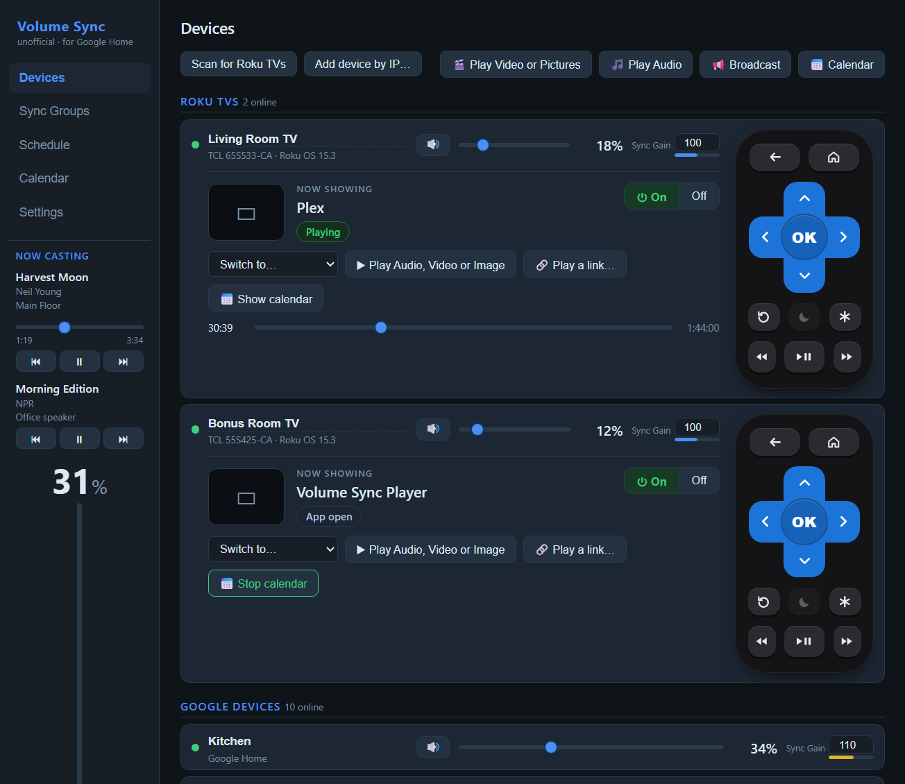
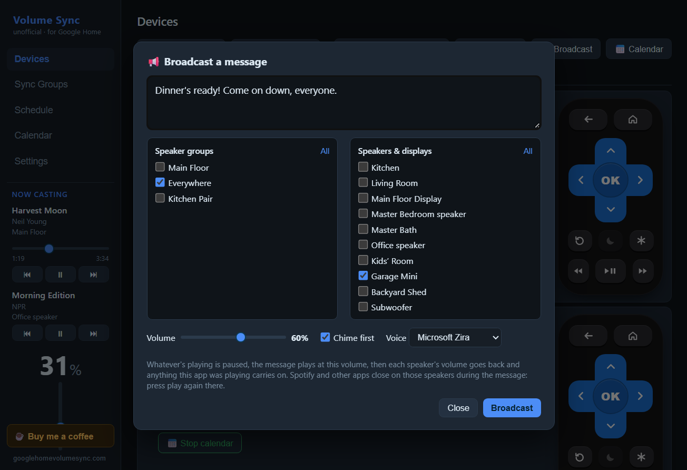
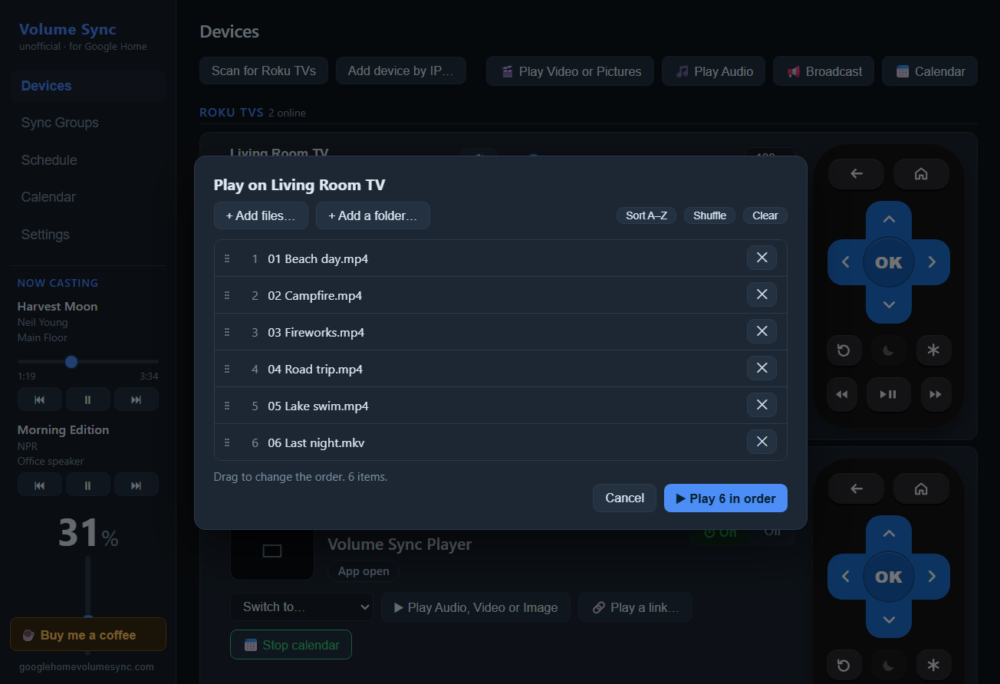
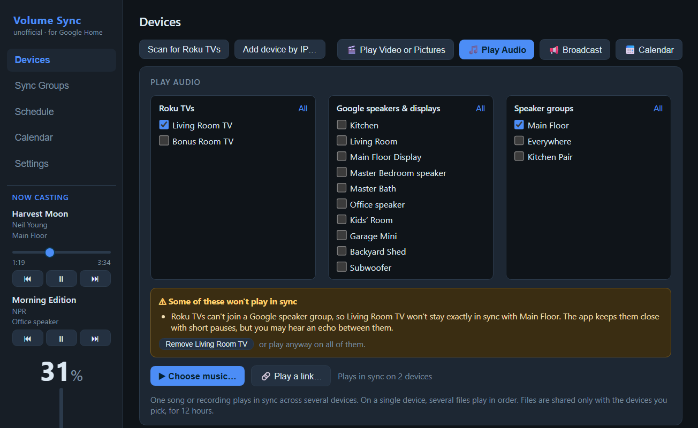
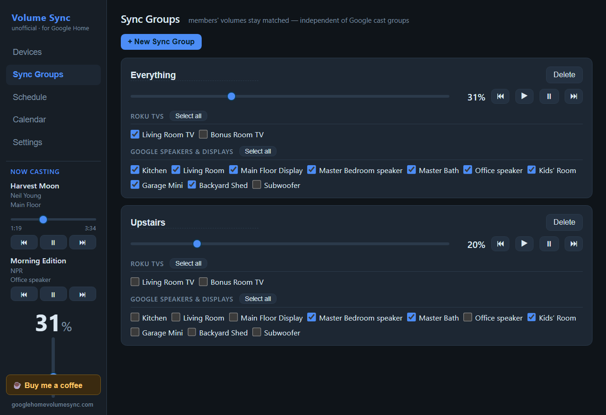
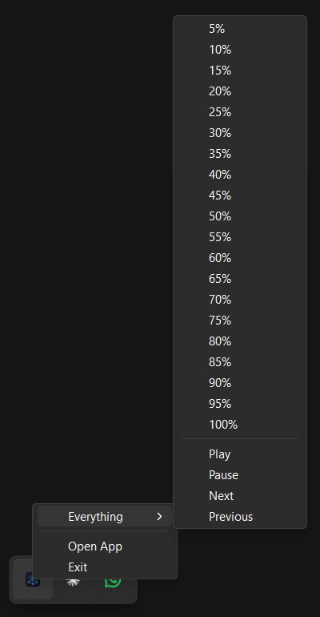
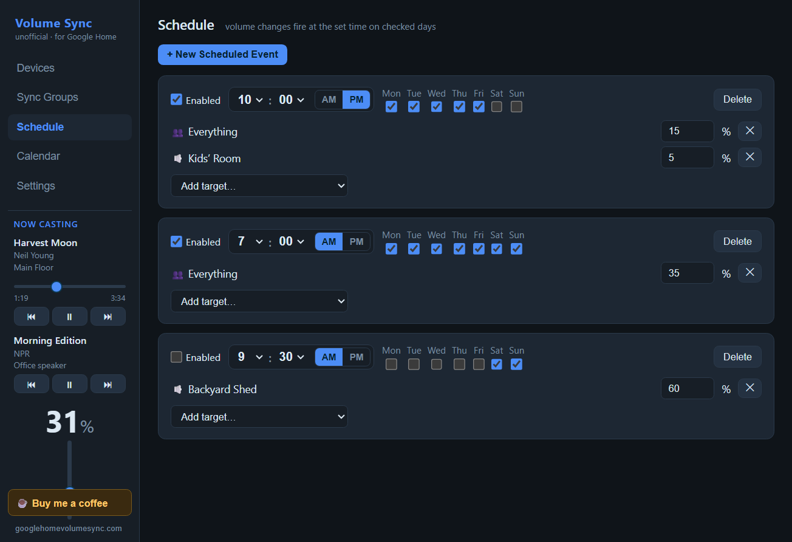

Every speaker in the house, at the same volume.
Keep Google Home speaker and device volumes in sync with the program running on your Windows computer. It looks for changes in volume in devices, and matches the volume on devices you assign in this program. You can also adjust relative volume gain to balance volumes as desired throughout your home. It also puts your family calendar on your TVs, plays your own videos and music in sync, and broadcasts spoken messages to your speakers.
Devices 4 online / 4 known
Three steps, about five minutes.
Install on a PC that stays on
A desktop, a laptop, or a small mini PC in a closet. No admin rights needed, and it starts with Windows by default.
It finds your speakers
Every Cast device on the network appears on its own, with its live volume. There is nothing to configure.
Group them, set the balance
Tick the speakers that should move together and nudge each room’s Sync Gain until the house sounds even.
Small app, done properly.
Everything runs on your PC and your network. No Google account, subscription or hub.
Finds every Cast device
Google Home, Nest Mini, Nest Audio, Nest Hub, Chromecasts and cast groups show up automatically.
Sync groups
Change one speaker from the app, the Google Home app or the speaker itself, and the rest of its group follows.
Sync Gain
A 0–200% balance per device, so a quiet bathroom and a loud kitchen still move together at the right levels.
Tray presets
Right-click the tray icon to set any group from 5% to 100%, or play, pause and skip.
Schedules
Weekly rules by day and time: bring the house down at bedtime, back up in the morning.
Rename anything
Give devices and groups your own names. Cast groups and TVs are listed in their own sections.
Cast your own files
Play videos, music and pictures from your PC, or a link, on a Nest Hub, Chromecast, speaker group or Roku TV. Pick files or a whole folder and drag them into order; subtitles and a progress bar you can drag.
Play in sync
One video or song on several screens and speakers at once, kept in step. Pause or skip on any of them and the rest follow. It warns you when a mix can’t stay exactly together.
Your calendar on the TV
Google, Outlook and iCloud calendars with your photos and a big clock, on Roku TVs, Nest Hubs and Chromecasts. Month, week or day, light or dark, real 4K on Roku, a text size per screen, and on a schedule that turns the TV on and off again.Also works as a Roku screensaver. The design comes from the free PactoTech Calendar Saver.
Broadcast messages
Type “Dinner’s ready” and it’s spoken on the speakers you pick, after a chime, at your broadcast volume. The music pauses first and each volume goes back afterwards.
A full log
Every discovery, observed change and command, with each device’s Cast ID and address.
More than Google
Roku TVs, Yamaha MusicCast receivers, LG webOS TVs and Optoma projectors can join the same groups.Roku is tested on real hardware. Yamaha, LG and Optoma are written to spec but untested.
The real thing.
The app itself, shown with a sample house and calendar.
Your calendar on the TV
Every calendar in one month view, your photos down the side and a clock you can read from across the room. Up and Down on a Roku remote switch to the week or the day.

Big enough for a small screen
Each TV and display gets its own text size, theme and views. A 7″ Nest Hub on the day view, at 250%, reads fine from the kitchen table.

Calendar settings
Show it on a TV now, keep it as a Roku screensaver, or schedule it: weekdays at 7:00 in light mode, turning the TV on, and off again once nobody has used the remote for a while.

Every device, one list
Live volume for each speaker, the name you gave it and its Sync Gain. Roku TVs get power, inputs, what’s on screen and a remote.

Broadcast a message
Pick speakers or speaker groups, type the message, set the volume. Whatever’s playing pauses and everything goes back afterwards.

Play a queue
Add files or a whole folder, drag them into order, and play. The device’s card shows what’s next.

Play in sync
Tick several TVs and speakers; one song or video plays on all of them in step. If a mix won’t stay exactly together, it says why and offers to drop the odd one out.

Sync groups
Tick the speakers that belong together. Each group has its own slider and playback controls, independent of Google’s cast groups.

Volume from the tray
No need to open the window. Right-click the icon, pick a group, pick a level, or show the calendar on a TV.

Schedules
A time, the days it runs, and the level for each group or device. Each rule switches on and off with one checkbox.

What runs it, and what it controls.
Amazon affiliate links. They cost you nothing extra and help keep the app free.

Beelink Mini S12 Pro — Intel N100, 16 GB, 500 GB, Windows 11
About 6 W at idle and nearly silent. Runs the sync around the clock, so speakers stay matched when your main PC is off.
View on Amazon →
Google Nest Mini (2nd Gen) — Charcoal
The cheapest way to put synced audio in every room. Google has stopped making it, so check the buying options and the seller.
View on Amazon →
Google Nest Audio — Chalk
Bigger sound for living spaces. Two pair into a stereo set the app treats as one device.
View on Amazon →
Google Nest Hub (2nd Gen) — 7″ smart display
A screen for the kitchen or bedside. Shows what’s playing and joins sync groups like any speaker.
View on Amazon →
Google Nest Hub Max — 10″ display with big speakers
The big-screen option for the main room. Only imported units are listed right now, so check region and plug type.
Browse on Amazon →
Chromecast with Google TV (4K)
Brings the TV into the same groups and schedules. Listings are mostly resellers, so compare prices.
Browse on Amazon →As an Amazon Associate this site earns from qualifying purchases. Ratings as read in September 2026. “Browse” links open an Amazon search because there is no current first-party listing.
Before you install.
Does it need the internet or a Google account?
No. It speaks the Cast protocol directly to your speakers over your own network, so it keeps working if the internet drops. The only optional outbound connection is the update check against this project’s GitHub releases.
Does it fight with the Google Home app?
No, it listens to it. Change a volume in the Google Home app, by voice, or on the speaker itself, and the app picks it up and brings the rest of that sync group to match.
What does Sync Gain do?
It’s a per-device multiplier from 0 to 200%. A speaker at 50% gain sits at half the group’s level, and when you change that speaker it reports back at double, so the group stays consistent. Set it once and the whole house moves together at the balance you chose.
Does it run without logging in to Windows?
Not yet. It launches when you log in and sits in the tray. On a mini PC that stays logged in, that behaves like an always-on service. A true Windows service is planned.
Does it work with my Google cast groups?
Yes, they’re discovered and listed separately with their own volume and playback control. They can’t be members of a sync group, because a cast group’s volume already comes from its speakers and syncing both would apply every change twice.
Does the calendar need my PC to stay on?
Yes. The PC redraws the calendar every minute and sends it to your TVs as a picture, so it needs to be on (a small mini PC is ideal). If it goes off, a Roku keeps the last picture and says when it was last updated.
Will a broadcast stop my Spotify?
It pauses it. A speaker can only run one casting app, so the message closes Spotify on the speakers it plays on; the app then puts every volume back and tells you where to press play again. Things the app itself was playing carry on by themselves.
Is it really free?
Yes. The source is on GitHub, there is no telemetry and nothing to buy. The tip jar and the Amazon links are how it stays maintained.
Did it make your house sound better?
Volume Sync is free and open source, built and maintained by one person. If it saved you from shouting “Hey Google, volume down” in three rooms, a coffee goes a long way. A Ferrari would go further, but I’ll settle for the coffee.
Set it up once.
Stop chasing volume.
Install it on the PC that never sleeps and your speakers stop arguing with each other.